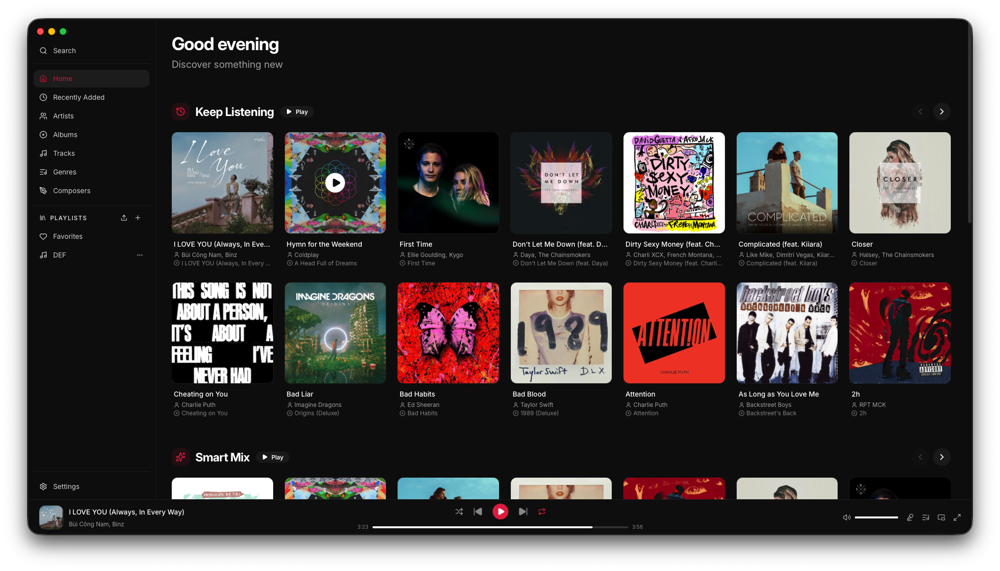
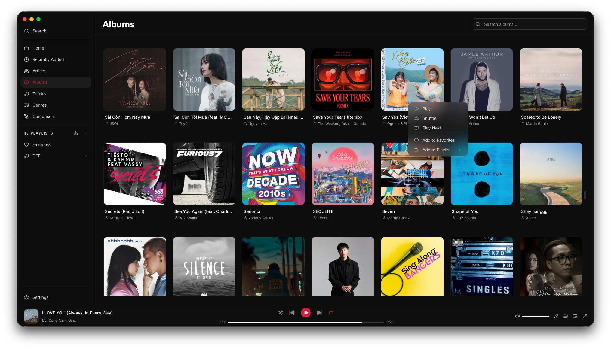
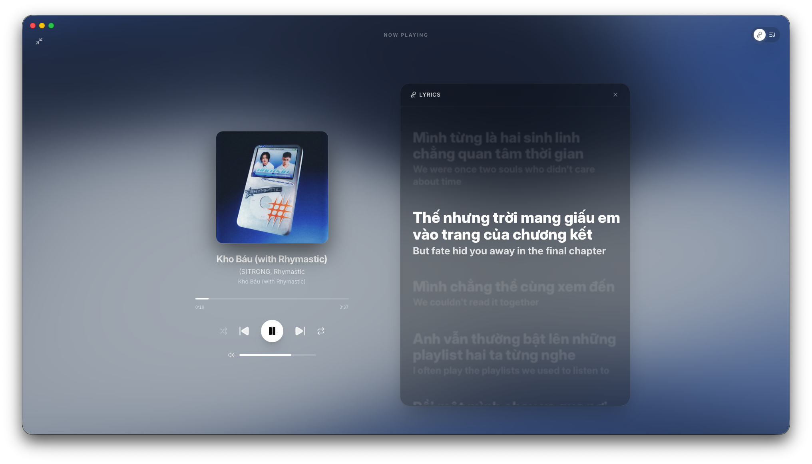
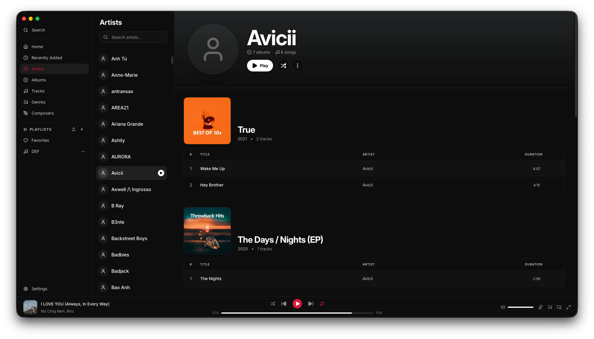

Your music,
refined.
All-in-one offline music player. High-performance, battery-efficient, and beautifully designed with glass-morphism.

Everything you need
Your whole library
Add any folder and Airmedy scans it instantly, even with tens of thousands of tracks.
Lyrics that follow
Synced lyrics scroll line-by-line as the song plays. Immersive listening at its best.
10-band Equalizer
Tune the sound to your headphones. Native performance on macOS, Windows, and Linux.
Fast Search
Find any track, album, or artist in milliseconds with our lightning-fast indexing.
Playlists
Create and manage playlists, import and export them, and browse by genre or artist.
Media Keys & Tray
Control playback via keyboard, lock screen, or the system tray menu.
Native Performance
No Electron. No bloat. Lightweight experience.
Last.fm Scrobbling
Sync your listening history and loved tracks automatically with Last.fm.
Mini & Fullscreen
Switch between a beautiful immersive fullscreen mode and a compact miniplayer that stays out of your way.
Designed for Focus
Library Explorer
Beautiful glass-morphic interface that highlights your album art and metadata.

Synced Lyrics
Immersive fullscreen mode with lyrics that move with the music.

Compact Player
A tiny, versatile mini-player that stays on top and out of your way.
Artist Insights
Deep dive into your favorite artists with discography and bios.

Frequently Asked Questions
Airmedy supports a wide range of formats including MP3, AAC, M4A, FLAC, WAV, Ogg Vorbis, Opus, APE, and even DSD. We use native engines like AVFoundation on macOS and FFmpeg-backed decoding on Windows and Linux.
Yes! Airmedy is completely free and open-source under the MIT License. You can find the source code on GitHub.
Airmedy is built with privacy in mind. Your Last.fm session keys are stored securely in your system's native keychain (macOS Keychain, Windows Credential Manager, or Secret Service API on Linux). We never see your password, and no data ever leaves your machine except to scrobble tracks to Last.fm.
No, the FFmpeg libraries are statically compiled and bundled inside Airmedy. You don't need to install anything else.
Ready to listen?
Download Airmedy for your platform and start your journey.
Released under the MIT License.